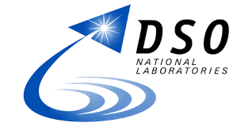
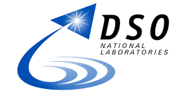

Multimodal Intelligence Lab
Department of Computer Science, University of Exeter
Welcome to the Multimodal Intelligence Lab, where we explore innovative solutions at the intersection of Artificial Intelligence, Machine Learning, and Multimodal Data Processing. Aligned with the University of Exeter’s 2030 strategy, our research investigates how Multimodal AI and related disciplines can contribute to a greener, healthier, and fairer society. Our core focus is the development of computer vision and machine learning techniques, with applications in healthcare, the environment, and social science.
News
[Jun 2025] Congrats to Ming and the team for a paper, Memory-Augmented SAM2 for Training-Free Surgical Video Segmentation, getting accepted in MICCAI 2025.
[Jun 2025]: Congrats to Shuaiyu and the team for the full version of OSDMamba getting accepted in IEEE Geoscience and Remote Sensing Letters.
[Apr 2025]: Dr Zeyu Fu has been invited to serve as a Guest Editor for a forthcoming Special Issue in Bioengineering, focused on AI-driven imaging and analysis for biomedical applications. (Deadline: 1 October 2025)
[Mar 2025]: Congrats to Shuaiyu and the team for a paper on Mamba-based oil spill detection getting accepted in ICLR 2025-ML4RS. (Oral Presentation)
[Feb 2025]: A joint PhD opportunity with the University of Exeter & Université Paris-Saclay. The project is to work on Generative Multimodal Fusion & Uncertainty Quantification for Environmental Monitoring. Please get in touch with your CV and a research plan before the deadline: 30 Mar 2025. Please get in touch with your CV and a research plan before the deadline: 30 Mar 2025.
[Jan 2025]: PhD Studentships with EPSRC DLA for September 2025 Entry! Join my Multimodal Intelligence Lab to work on a project titled "Beyond Texts: Harnessing Multimodal AI to Combat Online Harmful Content in Videos."
[Dec 2024]: Congrats to Fu Wang and the team for a paper about evaluating semantic robustness in Bird's Eye View Detection getting accepted in AAAI 2025.
[Nov 2024]: We're hiring Winter/Summer Research Interns (50% FTE) to join our Multimodal Intelligence Lab! Work on multimodal ML, video analysis, multimedia computing, and ML for medical imaging or remote sensing. UK-based & right to work required. Email your CV + research statement to apply.
[Oct 2024]: Exciting Opportunities to join our Multimodal Intelligence Lab at the University of Exeter: Exeter-CSC PhD Scholarships are open for applications. Please get in touch with your CV and research plans before the deadline: 2 Dec 2024.
[Sep 2024]: A paper titled "Pose-Oriented Scene-Adaptive Matching for Abnormal Event Detection" co-authored with Newcastle University is accepted for publication in Neurocomputing.
[Aug 2024]: A paper titled "Position and Orientation-Aware One-Shot Learning for Medical Action Recognition from Signal Data" co-authored with Newcastle University is accepted for publication in IEEE Transactions on Multimedia.
[Feb 2024]: We are seeking a Postdoctoral Research Fellow at the University of Exeter (in collaboration with Dr Jianbo Jiao from the University of Birmingham) to work on multi-modal learning (visual, text and audio) for video understanding.
[Jan 2024]: A paper titled "Automating the Human Action of First-trimester Biometry Measurement from Real-world Freehand Ultrasound" from the PULSE project is accepted for publication in Ultrasound in Medicine & Biology.
Selected Funders
The research works at MIL has gratefully received funding from several distinguished and venerable funders.
 

Selected Collaborators
The lab is fortunate to collaborate with a range of internal and external partners.